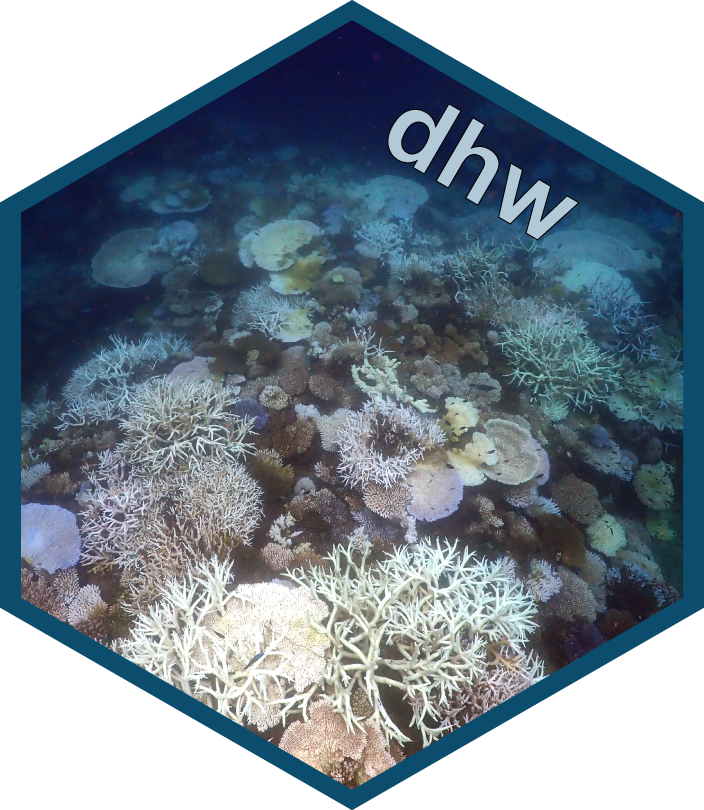

dhw: an R package for calculating various SST metrics (Maximum Monthly Mean Climatology, SST Anomalies, Coral Bleaching HotSpots, Degree Heating Weeks)
 The dhw package calculates SST metrics from raw SST datasets by following the methods of the Coral Reef Watch Coral Bleaching Heat Stress Product Suite Version 3.1 (see Skirving et al. 2020 for methods).
The Degree Heating Weeks product from National Oceanic and Atmospheric Administration’s (NOAA) Coral Reef Watch (CRW) program is calculated from the
Due to changes in the datasets used by the CRW over the years (see Skirving et al. 2020 for details), the CoralTemp degree heating weeks (and other SST metrics) are calculated against a specific climatology (1985–1990 and 1993) to allow for internally consistent anomaly products.
The dhw package provides a series of functions to recreate the algorithms for the CRW metrics (Maximum Monthly Mean Climatology, SST Anomalies, Coral Bleaching HotSpots, Degree Heating Weeks) using any SST product (e.g., OISST) that spans the baseline period of 1985 to 1993.
The package is uses the terra package to process the raster data and is (potentially) slower than other R packages (e.g. stars) and very much slower than other alternatives (e.g. cdo) for large datasets. Updated versions of the package will switch to stars spatiotemporal arrays and raster data cubes, and provide alternative functions for cdo to speed up large datasets.
Also included are a series of functions for visualising SST metrics and functions to reliably download common datasets (e.g. CRW, OISST) via the NOAA NCEI thredds server.
Please file any issues and comments and suggestions to george.roff@csiro.au.
the current development version of dhw can be installed from github:
#install.packages("remotes")
remotes::install_github("symbiobase/symbioR", force=TRUE)References
Skirving et al (2020) Remote Sensing 12(3856) doi:10.3390/rs12233856